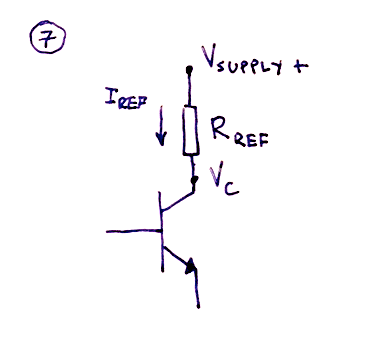
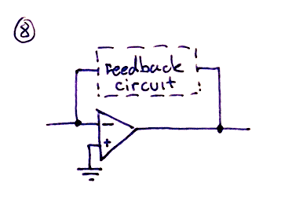
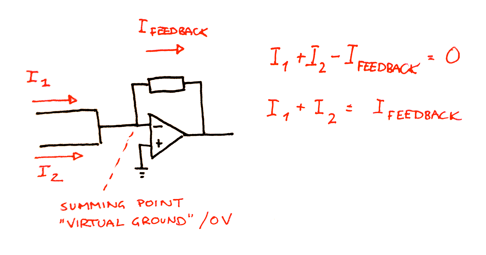
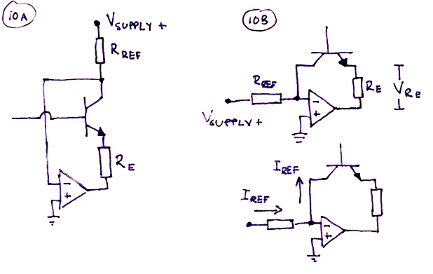
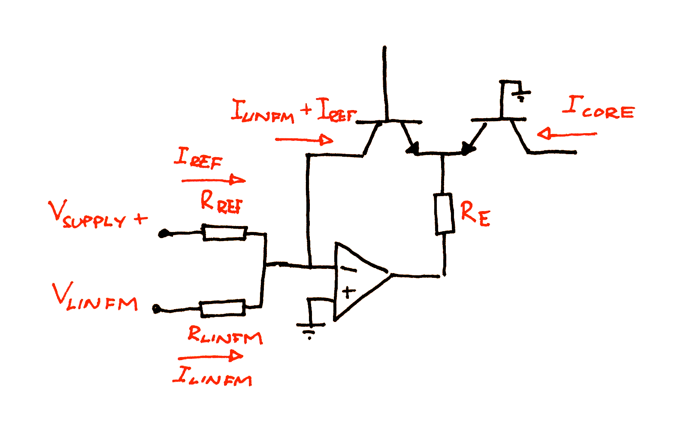
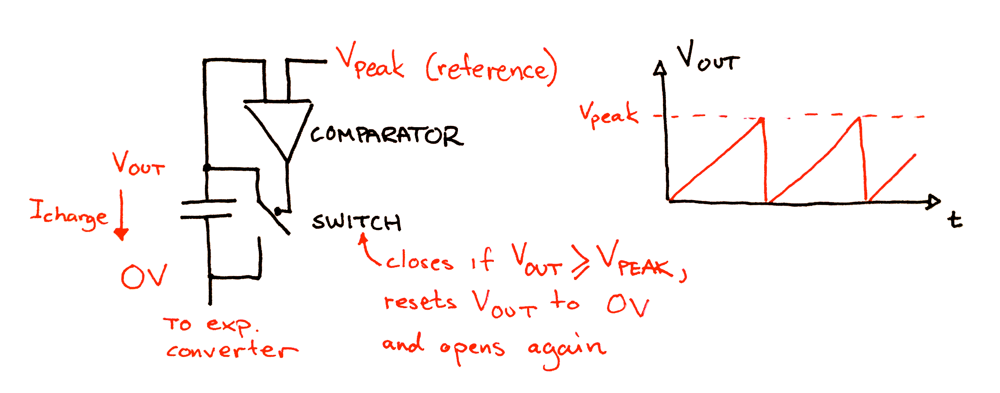
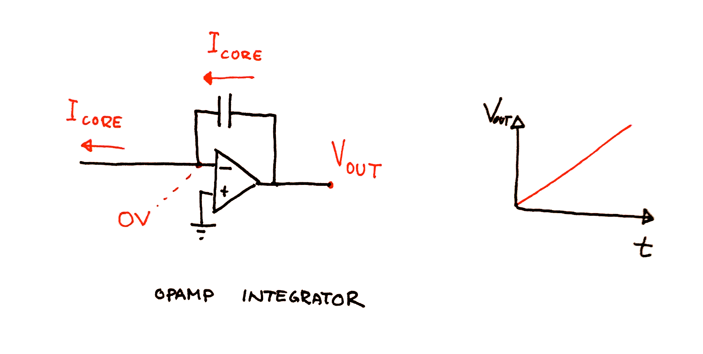
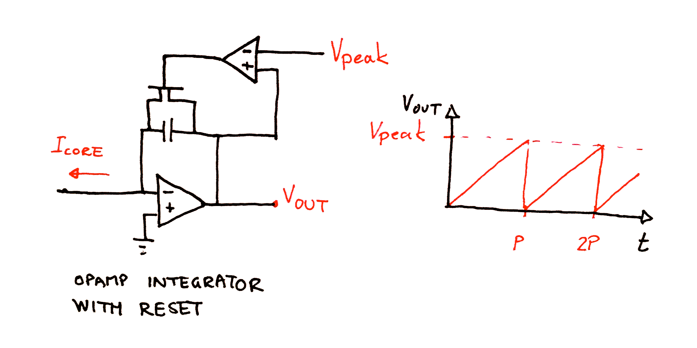
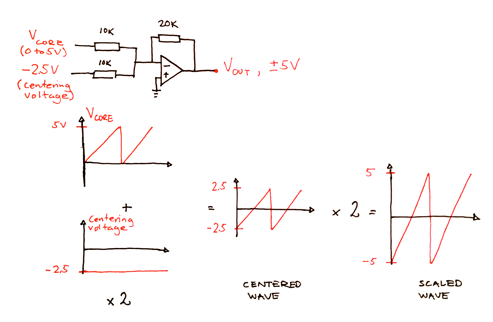

In our formula for the temperature corrected exponential converter () we made a small but crucial assumption. For the converter to work as intended, the collector current, $I_{c_L}$ of the left transistor must be constant. In fact, we can call this current our reference current as the output is linearly dependent on it.
But how do we make a constant current source?
Setting up a specific current is easy - Ohm's law states that $V = R \cdot I$, so as long as we can control the voltage across a resistor we can control the flow of current through it. A poor mans current source would be to connect a resistor from $V_{supply+}$ to the left transistor's collector, but even if this will give us an approximate value for the current, it will change as the base voltage changes because this also affects (THE RELATIONSHIP BETWEEN THE EXTERNAL RESISTOR AND THE INTERNAL RESISTANCE BETWEEN THE COLLECTOR AND THE BASE?/the collector voltage. 
Before we reveal a solution however, we need to take a step back and talk a little about the operational amplifier in its negative feedback mode. P.S.: If you know your basic opamp theory you may skip the next section.
When connecting the output of the opamp to its negative input, you get what is called an inverting amplifier. It operates in what is called its negative feedback mode, the output is fed back to the negative input. 
The operational amplifier in its negative feed back mode has a few important properties that are really usefull, and we will use them in the next two sections.
1) The opamp will try to keep both inputs at the same potential.
By connecting the positive input to ground, the opamp will try to keep the negative terminal at the same level and we will get what is called a virtual ground - it stays at $0V$ relative to ground but is, crucially, not connected to ground.
2) The opamp will try to keep the sum of currents into its negative terminal at $0A$.
Any current sent into the negative terminal will be nulled out by the current in the feedback loop from the opamp output to the negative input.
Exactly how the opamp knows how much current to send through the feedback loop is not terribly important. What IS important is to understand what happens at the output. The opamp can either raise or lower its output voltage, sourcing or sinking current. Think of it like this: Whenever the input current at the negative terminal changes, the opamp will try changing its output to compensate for the change. If it first tries to raise the voltage and this makes the sum of the input currents closer to zero, it has found the correct direction of change. If not, it will try lowering the voltage.
Now, how high will the output voltage be? That depends on the circuit elements in the feedback loop, so the simple answer is "whatever it has to be to induce a feedback current that nulls out the input currents". For a simple inverting amplifier that has a single resistor in its feedback path, the current is $I_{feedback} = -V_{out} / R_{feedback}$ (minus because the forward voltage drop is equal to $0 - V_{out}$). For other configurations, just keep in mind that the primary goal is to keep the sum of the input currents at zero and that the input voltage is always $0V$. Also, it is important to be aware that the current into the feedback loop at the negative input terminal may not necessary be the same as the current into the opamp output terminal, this all depends on what you put inside the feedback loop as we'll see shortly.
Of course, this is only the ideal behaviour of the opamp. As it can only sink/source a limited amount of current - about $20mV$ is the norm for the TL07x series, but some datasheets say up to $40mV$ - and cannot rise/lower its output voltage beyond the supply voltages, it will only behave ideally within these limits.
Now, lets see how we can utilize the opamp to set up a reference current.
Our goal is to keep the current flowing into the collector of the left transistor constant, independent of what happens at the base and emitter.
But as mentioned in the "naive approach" section, we cannot just connect a resistor between a known voltage and the transistor collector and expect the voltage across the resistor to be constant.
So what can we do? Well, here is the trick: Put the transistor within the feedback loop of an opamp.
Remember the two opamp properties stated above - if we connect the opamp's positive terminal to ground, it will try to keep its negative terminal at 0V, and any input current will be counteracted by the current in the feedback loop.
If we connect a resistor between the positive supply voltage and the transistor collector, and at the same time connect the collector to the negative terminal of the opamp and the emitter to the opamp output, the transistor ends up being part of the opamp feedback loop. The opamp will do whatever possible to keep the input at 0V, which means that the current flowing through the resistor will be $I = V_{supply} / R_{collector}$, independent of what happens in the transistor. This current flows into the opamp's negative terminal, but the second property tells us that the sum of currents into the terminal should be 0. In order for this to be true, the same current has to flow out of the negative terminal and through the transistor's collector. This is also independent of what happens in the transistor, and voilla, we've got a constant reference current!
Earlier we claimed that exactly how the opamp manages to keep the input at $0V$ and match up the input and output currents is unimportant. But to construct a circuit that works within the desired ranges we need to understand a bit more about what happens. More specifically, we need to know how to keep the opamp within its operational range, not exceeding the amount of current it can source/sink and its maximum voltage swings.
From the exponential converter discussion we know that the current through the emitter is the sum of the current into the collector and the current into the base. However, the current into the base is very much smaller, often between 50 and 200 times smaller than the collector current, so for this discussion it may be ignored. This means that the emitter current equals the collector current.
Furthermore, we know that the change in emitter voltage will give us a collector current in the right transistor, \(I_{c_2} = I_{c_1} \cdot e^{\frac{\Delta V_{be}}{V_T}}\).
All this current has to go somewhere, and that somewhere is into the opamp's output. This means that the sum of the emitter currents in the two transistors cannot exceed $20mV$.
For the circuit to work, the following has to be true:
\(I_{c_1} + I_{c_2} < 20mV \)
\(I_{c_1} + I_{c_1} \cdot e^{\frac{\Delta V_{be}}{V_T}}) < 20mV \)
\(I_{c_1} \cdot (1 + e^{\frac{\Delta V_{be}}{V_T}}) < 20mV \)
But looking at HOW the opamp manages to keep the left emitter current constant, we realise this: All of the current flows through the emitter resistor and into the opamp. Again, Ohm's law tells us that $V = R \cdot I$. The current is the sum of the emitter currents, which means that the voltage across the resistor is
\(V_{R_e} = R_{e} \cdot I_{c_1} \cdot (1 + e^{\frac{\Delta V_{be}}{V_T}})\)
So to keep all the current flowing through the resistor, the opamp must make sure the voltage at its output is $V_{R_e}$ below the transistor emitter voltage $V_e$. This means that, at all times, the output voltage of the opamp must be
\(V_{out} = V_e - V_{R_e}\)
\(V_{out} = V_e - R_{e} \cdot I_{c_1} \cdot (1 + e^{\frac{\Delta V_{be}}{V_T}})\)
As the opamp output cannot be higher or lower than its supply voltages (a bit from them in practice), this gives us a second rule:
For the circuit to work, the following also has to be true:
\( V_{supply-} < V_{out} < V_{supply+}\)
\( V_{supply-} < V_e - R_{e} \cdot I_{c_1} \cdot (1 + e^{\frac{\Delta V_{be}}{V_T}}) < V_{supply+}\)
A nice consequence of the way we created our reference current is that adding voltage control of linear frequency modulation becomes very easy.
If we look at our output current formula, we see that the output current is linearly related to the reference current. Linear Frequency modulation is thus just a matter of changing the reference current.
And how do we do that? Again, 2) gives us the solution. The reference current is the sum of all other currents into the opamps negative terminal (the opamp works as a summer and the negative terminal becomes what is known as the summing point). All we need to do is turn the control voltage into a current and inject it into the summing point and the reference current will increase by the same amount.
By connecting a resistor between the cv input and the opamp, we convert the cv into a current. The summing point is still at 0v, so the amount of current flowing is simply
$I_{linfm} = V_{cv}/R_{linfm}$
$R_{linfm}$ is often selected so that $I_{linfm}=I_{ref}$ when $V_{cv}$ is at its highest (often 5 or 10 volts), which means that the frequency can be modulated by +/- 100% (the reference current will be between $0V$ and $2 \cdot I_{ref}$)
Up to this point we've just assumed that if we generate a current we can somehow turn this into a periodic signal with a controllable frequency. Fortunately, this is true and not very hard at all. The mathematics are a bit hairy but if you do not understand integrals just use the resulting formulas.
The general idea is this: let the current charge a capacitor. Whenever the potential across the capacitor reaches a predefined value, short circuit the capacitor, resetting the voltage to zero. Now remove the short circuit and let the capacitor charge again etc. The output voltage will be a sawtooth wave.

To measure the voltage across the capacitor, we may use a device called a comparator. This is a device with two inputs (positive and negative) and one output. It will compare its inputs and if the positive is higher than the negative it will output a voltage close to its positive supply voltage. If the positive input is lower than the negative it will output a voltage close to its negative supply voltage.
To short circuit the capacitor we can connect a JFET transistor across its two terminals. When the transistor is turned on it short circuits the capacitor, when it is turned off the capacitor will charge as normal.
Connect the output of the comparator to the transistor gate (through some additional circuitry that we'll get back to later). Connect the negative input of the comparator to a reference voltage, for example 5V, and the positive input to one of the capacitor terminals. The second capacitor terminal should be connected to the output of the exponential converter.
The current from the exponential converter will charge the capacitor until it reaches 5V. At this point the comparator's output flips from negative to positive. This turns on the transistor, which short circuits and instantly discharges the capacitor. As the output voltage falls below 5V, the comparator switches back to negative and the transistor turns off again restarting the cycle.
The frequency of the output wave is determined by the time it takes to charge the capacitor from $0V$ to the point where we short circuit it (for example $5V$).
From the capacitor formula, we have that the voltage across the capacitor at any time $t$ can be written as
\(V(t)=\frac{1}{C} \cdot \int_0^t I(\tau) d\tau + V(t_0)\)
where
$C$ is the rated capacity of the capacitor in Farad
$V(t_0)$ is the voltage across the capacitor when we start charging it
$I(\tau)$ is the charging current at time $\tau$
As the charging starts at $0V$, $V(t_0)$ is $0V$. The charging current has to be held constant as long as we want a specific frequency. This means that the formula can be simplified to
\(V(t)=\frac{1}{C} \cdot \int_0^t I d\tau\)
The indefinite integral of a constant $a$ is simply
\(\int a dx=ax+K\), where $K$ is a constant.
The definite integral from $b$ to $c$ is
\(\int_b^c a dx=[ax+K]_b^c = (a\cdot c+K)-(a \cdot b +K) = a\cdot c+K-a \cdot b -K = a(c - b)\)
Which means that
\(V(t)=\frac{1}{C} \cdot I(t-0)\)
\(V(t)=\frac{I}{C}t\)
We now have a usable relationship between time, voltage and current. The time in the formula may be interpreted as the period for a single cycle of the output wave. We know that the voltage at the end of the period is whatever voltage we decided to use as the peak for the wave (remember, the one we connected to the negative terminal of the comparator, when the capacitor reaches this voltage it will be reset to $0V$).
If we let $V_{peak}$ be this peak voltage, and remember that the frequency $f=\frac{1}{t}$ we get two very useful formulas:
\(V_{peak}=\frac{I}{C}t\)
\(t=\frac{C \cdot V_{peak} }{I} \) \(f = \frac{1}{t}\)
The frequency resulting from charging a capacitor with a constant current $I$ and discharging it when it gets to $V_{peak}$ is
\(f = \frac{I}{C \cdot V_{peak}} \)
and consequently
The current necessary to produce a frequency $f$ is
\(I = f \cdot C \cdot V_{peak} \)
There is something we need to mention in relation to the core. How do we manage to keep the current constant and still make sure the lower end of the capacitor stays at 0V?
The opamp comes to our rescue again. As before, we put our circuit inside the negative feedback loop and connect the positive input to ground. Once again we'll get a virtual ground at the negative terminal, it will stay at $0V$ at all times. The control current will flow out of the negative terminal and into the exponential converter, but to counteract this the same current will flow through the capacitor. To manage this, the opamp has to raise its output voltage in accordance with the capacitor formula $V(t)=\frac{I}{C}t$. Thus, the opamp output voltage is equal to $V(t)$ and will be the exact output wave we wanted, with an amplitude from 0V to $V_{peak}$.

This configuration only works as long as V(t) is less than the supply voltage of the opamp, but as we reset V periodically this is no problem. It does however mean that we have to choose $V_{peak}$ to be less than $V_{supply+}$. $5V$ is well within this limit if you use a $+/- 12V$ or $+/- 15V$ supply.

To buffer the wave and at the same time center it 0V and scale its amplitude if wanted, we add an additional inverting amplifier opamp just after the output. The resistor in the feedback loop may be chosen with a different value from the input resistor to scale the output, and a separate input voltage may be added to center the wave. It is common to use a potentiometer in a resistor-divider configuration to create an adjustable centering voltage as component variations makes it hard to get a correct value otherwise.

To make sure the transistor is turned on long enough for the capacitor to completely discharge we add what is called HYSTERESIS.
TODO: frankencompensation/dealing with non-instant discharge